[8-1] DMA直接存储器存取 — 学习笔记
- 课程：江协科技《STM32入门教程-2023版 细致讲解 中文字幕》
- 视频：BV1th411z7sn?p=23，49:42（2982 秒）
- 素材：248 帧关键帧（每 12 秒，宽 1280px）+ PP-OCRv4 画面硬字幕 OCR（852 段）；关键截图 15 张随笔记收录（源图在
vidsum_out/stm32_p23/frames/，站内图片在assets/images/stm32-23/） - 字幕情况：该集 B 站没有 CC/AI 字幕，文本由画面烧录的中文字幕 OCR 得到（source=subtitle-ocr）；本集字幕里混入了参考手册页脚水印（「本译文仅供参考，如有翻译错误，请以英文原稿为准……请读者随时注意在 ST 网站下载更新版本」），这些不是老师口述内容，已剔除，错字已按画面校正（清单见文末「存疑」）。
- 本集定位：这是模块 8（DMA）的理论课——00:20–04:12 只演示两个已经写好的成品工程（
8-1 DMA数据转运、8-2 DMA+AD多通道），04:18「我们来看一下 PPT」之后到 49:38 全是 PPT + 参考手册翻页，没有一行现场写码；片尾 49:38「我们下一小节来开始写代码」——代码在 P24 [8-2]。本集没有任何库函数列表、初始化结构体或配置步骤，相关内容统一注明「在 P24」。
一句话结论
DMA（Direct Memory Access，直接存储器存取）就是一个「数据转运小助手」：它不经过 CPU，直接在自己的总线（AHB 主设备）上把数据从一个地址搬到另一个地址——外设 → 存储器、存储器 → 外设、存储器 → 存储器都可以，搬运期间 CPU 完全不参与，把 CPU 从「搬数据这种杂活」里解放出来。要记的框架有三层：① 它搬的对象都是「存储器」——STM32 里 Flash（0x08000000）、系统存储器/选项字节（0x1FFF 开头）、SRAM（0x20000000）、外设寄存器（0x40000000）、内核外设寄存器（0xE0000000）本质都是存储器，只是用途不同，所以「外设到存储器」也只是一类存储器搬运；② 它的结构——总线矩阵左端主动单元是内核（DCode 总线专访问 Flash、系统总线访问其他）和 DMA 总线，右端被动单元是 Flash/SRAM/外设；仲裁器解决冲突（多个通道分时复用一条 DMA 总线、按优先级决定先后；DMA 与 CPU 抢同一个目标时暂停 CPU，但保证 CPU 至少一半总线带宽）；AHB 从设备就是 DMA 自己的寄存器（CPU 靠它配置 DMA）；DMA 请求线把各外设的硬件触发信号送进来；③ 它内部怎么工作——两个站点（外设站点、存储器站点）各有 3 个参数：起始地址、数据宽度（字节/半字/字）、地址是否自增（相当于 p++），中间是方向参数、传输计数器（自减，减到 0 停止并把自增地址复原）、自动重装器（不重装=单次模式，重装=循环模式）、触发控制（M2M=1 软件触发、M2M=0 硬件触发）、开关控制；DMA 工作的三个条件：开关使能 + 传输计数器>0 + 有触发信号。资源上：12 个独立可配置通道 = DMA1 的 7 个 + DMA2 的 5 个，C8T6 只有 DMA1 的 7 个通道；每个通道都支持软件触发和特定的硬件触发——硬件触发源绑定在固定通道上（例如 ADC1 只能用通道 1，见「图22 DMA1请求映像」），软件触发则任意通道都行。两个坑必须记：软件触发与循环模式不能同时用（否则 DMA 停不下来）；写传输计数器前必须先关闭 DMA（手册规定）。最后一个关键应用：ADC 扫描模式 + DMA 是天生一对——ADC 扫描时单通道转换完成没有标志位、也没有中断，靠软件根本来不及搬（转换只要几 us、还会互相覆盖），而 DMA 可以「每个通道转换完成就触发一次转运」；作者实测：ADC 单通道转换完成虽然无标志位/中断，但确实会产生 DMA 请求（手册没写这一点，靠实验验证）。代码在下一集 P24。
0. 本集定位：理论课，代码在 [8-2] P24
- 本集是纯理论课：片头 4 分钟演示两个成品工程现象，04:18 起全 PPT/手册，没有打开 Keil 写代码、没有编译下载演示。
- 片头两个成品工程：①
8-1 DMA数据转运——把数组 DataA 的数据用 DMA 搬到数组 DataB，OLED 同时显示两个数组的数据和地址；②8-2 DMA+AD多通道——ADC 扫描模式测 PA0～PA3 四路，DMA 自动把 4 个结果搬进数组，OLED 直接显示。 - 片尾明确预告代码在下一集：49:38「本小节内容到这里就结束了，我们下一小节来开始写代码」——代码在 P24 [8-2]（就是这两个工程）。
- 本集不写代码/不写库函数：没有出现任何
DMA_Init之类的初始化结构体、没有库函数列表（只在基本结构里顺口提了一句「开关控制就是库函数里的 DMA 使能函数」）；寄存器只在最后的手册导读里翻页。所以本笔记不写配置步骤，一律注明「在 P24」。 - 理论衔接：ADC 的原理/扫描模式/转换时间在 P21、P22，本集只套用结论。
1. 片头两个成品工程
1.1 8-1 DMA数据转运
- 任务：使用 DMA 做存储器到存储器的数据转运——把一个数组里的数据复制到另一个数组里；
- 代码里定义了
uint8_t DataA[] = {0x01, 0x02, 0x03, 0x04};作为待转运的源数据，uint8_t DataB[] = {0, 0, 0, 0};作为转运的目的地；另外写了一个模块MyDMA（MyDMA.c/MyDMA.h），调用MyDMA_Init((uint32_t)DataA, (uint32_t)DataB, 4)传入源地址、目的地址和转运长度 4； - 主循环流程：第一步自增、变化一下源数组 DataA 的数据；第二步显示 DataA 和 DataB（连同两个数组的地址，用十六进制显示）；延时 1 秒方便观看；第三步调用
MyDMA_Transfer用 DMA 进行数据转运——「和下面直接for循环用 CPU 一个个手动转运数据，效果是一样的」；最后再显示一次 DataA 和 DataB，看数据是否从 DataA 转运到了 DataB。 - 现象：第一行是
DataA、右边是 DataA 数组的地址20000004；第二行是 DataA 的源数据（04 05 06 07，每 2 秒变一次）；第三行是DataB、右边是 DataB 数组的地址20000008；最后一行是 DataB 的目的地数据（03 04 05 06）——DataA 每变一次，Delay 1 秒后数据就转运到了 DataB，这个转运过程就是由 DMA 完成的。 - 「我这里屏幕比较小，所以就只定义了 4 个数据演示一下现象；你也可以定义 100 个、1000 个数据，然后用 DMA 转运，都是可以的」。
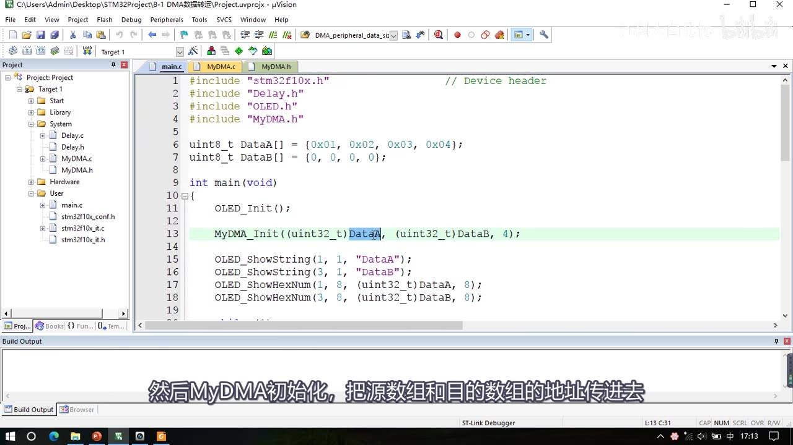
图 1：程序① 8-1 DMA数据转运 的 main.c——DataA 与 DataB 两个 uint8_t 数组的定义（DataA 初值 0x01～0x04、DataB 全 0）、MyDMA_Init((uint32_t)DataA, (uint32_t)DataB, 4);（高亮）、OLED_ShowString(1, 1, "DataA")/(3, 1, "DataB") 与十六进制地址显示；左侧项目树 System 组下有 MyDMA.c/MyDMA.h
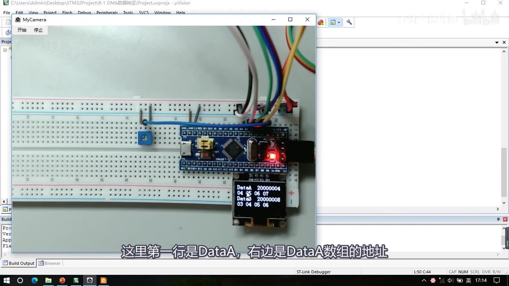
图 2：程序①现象——OLED 显示 DataA 20000004 / 04 05 06 07，DataB 20000008 / 03 04 05 06（DataA 变一次、1 秒后 DataB 同步）；字幕「这里第一行是DataA，右边是DataA数组的地址」
1.2 8-2 DMA+AD多通道
- 这个程序就是上一节（P22 片尾）预告过的：用 ADC 的扫描模式实现多通道采集，然后用 DMA 进行数据转运；
- 最终效果：AD 转换的数据直接自动地跑到我们定义的数组里来，之后只需要用 OLED 显示一下——「看上去还是非常方便的」；
- main 里 4 行
OLED_ShowString显示AD0:～AD3:，主循环 4 行OLED_ShowNum显示AD_Value[0]～AD_Value[3]，最后Delay_ms(100)； - 现象：也是测量 PA0～PA3 这 4 个通道的模拟量——电位器看
AD0（左拧变小、右拧变大）、光敏看AD1、热敏看AD2、反射红外看AD3，和上一节 AD 多通道的现象完全一样。
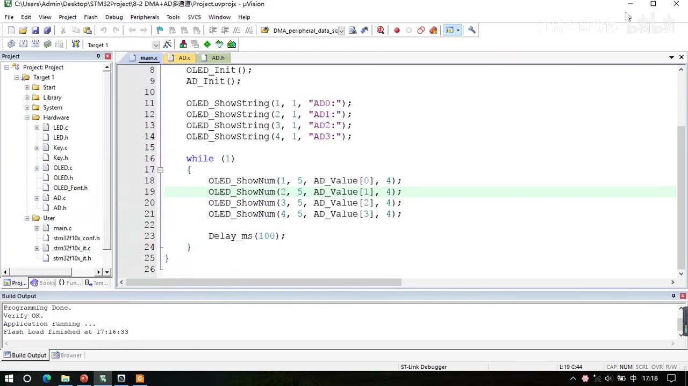
图 3：程序② 8-2 DMA+AD多通道 的 main.c——AD_Init() 后 4 行 OLED_ShowString(1～4, 1, "AD0:"～"AD3:")，主循环 4 行 OLED_ShowNum(1～4, 5, AD_Value 的第 0～3 个元素, 4) 与 Delay_ms(100);；项目树 Hardware 下有 AD.c/AD.h
2. DMA 是什么
2.1 定义：直接存储器存取
- DMA（Direct Memory Access）直译就是「直接存储器存取」，或者叫「直接存储器访问」；
- 从名字看：DMA 这个外设可以直接访问 STM32 内部的存储器——包括运行内存 SRAM、程序存储器 Flash 和寄存器等等，DMA 都有权限访问它们，所以 DMA 才能完成数据转运的工作；
- 「DMA 可以提供外设和存储器、或者存储器和存储器之间的高速数据传输，无须 CPU 干预，节省了 CPU 的资源。」
- 这里外设指的就是外设的寄存器，一般是外设的数据寄存器 DR（Data Register），比如 ADC 的数据寄存器、串口的数据寄存器等等；
- 这里存储器指的是运行内存 SRAM 和程序存储器 Flash——我们存储变量、数组和程序代码的地方；
- 转运过程中无须 CPU 参与，就节省了 CPU 的资源——CPU 省下的时间可以去干一些更专业的事情，「搬运数据这种杂活，交给 DMA 就行了」。
2.2 通道与触发方式
- STM32 的 DMA 有 12 个独立可配置的通道：DMA1 有 7 个通道、DMA2 有 5 个通道；
- 通道就是数据转运的路径——从一个地方移动到另一个地方，就要占用一个通道；多个通道转运时各转各的、互不干扰；
- 每个通道都支持软件触发和特定的硬件触发：
- 软件触发：DMA 进行的是存储器到存储器的转运时用它——使用软件触发之后，DMA 就会一股脑地把这批数据以最快的速度全部转运完成（这正是我们想要的效果）；
- 硬件触发：外设到存储器的转运不能一股脑地转，因为外设的数据是有一定时机的——比如转运 ADC 的数据，就要在ADC 每个通道转换完成后由硬件触发一次 DMA，触发一次转运一次，这样数据才是正确的；
- 「特定的硬件触发」：每个 DMA 通道的硬件触发源是不一样的，你要用某个外设的硬件触发源，就得用它连接的那个通道，不能任意选（下一章「DMA1 请求映像」细讲）。
- 本芯片的资源：STM32F103C8T6 的 DMA 资源只有 DMA1（7 个通道），没有 DMA2——数据手册里注意看一下。
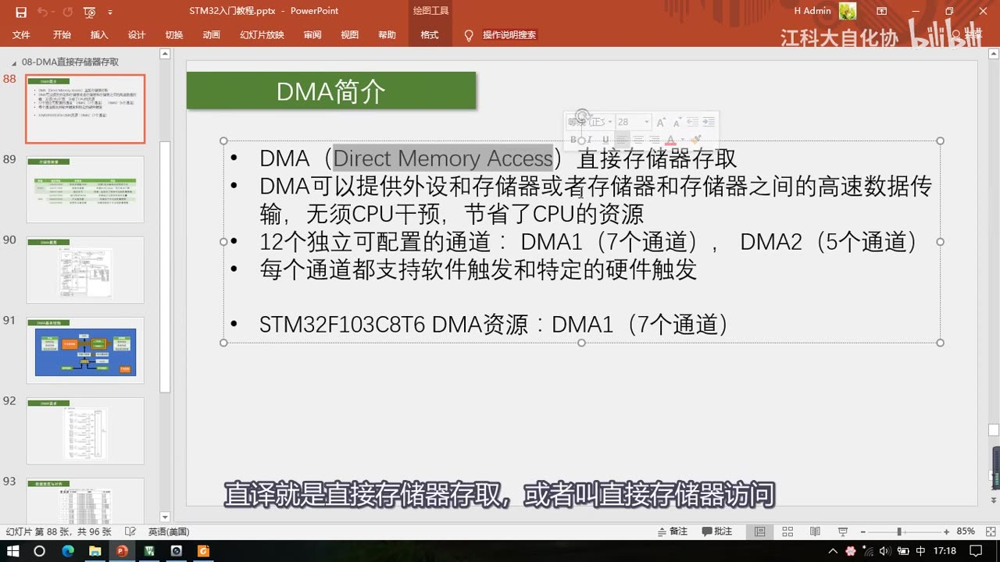
图 4：PPT「DMA简介」——DMA（Direct Memory Access）直接存储器存取；可提供外设和存储器或存储器和存储器之间的高速数据传输，无须 CPU 干预，节省 CPU 资源；12 个独立可配置通道（DMA1 7 个、DMA2 5 个）；每个通道支持软件触发和特定的硬件触发；STM32F103C8T6 DMA 资源：DMA1（7 个通道）；字幕「直译就是直接存储器存取，或者叫直接存储器访问」
3. 存储器映像：DMA 搬的到底是什么
3.1 计算机组成与存储器的两个知识点
- 计算机系统的五大组成部分：运算器、控制器、存储器、输入设备和输出设备；其中运算器和控制器一般合在一起叫 CPU，所以计算机的核心关键部分就是 CPU 和存储器；
- 存储器有两个重要知识点：一个是存储器的内容，另一个是存储器的地址——STM32 也不例外，它有一个表，列出所有类型的存储器和它们被安排的地址（数据手册里也有存储器映像图，表就是从图里总结的）。
3.2 STM32 的存储器映像表（6 行）
| 类型 | 起始地址（PPT 简写） | 存储器 | 用途 |
|---|---|---|---|
| ROM | 0x0800 0000 |
程序存储器 Flash（主闪存） | 存储 C 语言编译后的程序代码（下载程序的位置） |
| ROM | 0x1FFF F000 |
系统存储器 | 存储 BootLoader，用于串口下载 |
| ROM | 0x1FFF F800 |
选项字节 | 存储一些独立于程序代码的配置参数 |
| RAM | 0x2000 0000 |
运行内存 SRAM | 存储运行过程中的临时变量（变量/数组/结构体） |
| RAM | 0x4000 0000 |
外设寄存器 | 存储各个外设的配置参数 |
| RAM | 0xE000 0000 |
内核外设寄存器 | 存储内核各个外设的配置参数（NVIC、SysTick 等） |
- 表里所有东西——Flash、SRAM、外设寄存器，本质上都是存储器的一种；外设寄存器实际上也是存储器（存储介质其实也是 SRAM），所以 DMA 在「外设」和「存储器」之间的转运，本质上都是存储器之间的数据转运——「说成外设到存储器，只不过是 STM32 特别指定了可以转运外设的存储器而已」。
- ROM / RAM 的区别：ROM 是只读存储器，非易失性、掉电不丢失；RAM 是随机存储器，易失性、掉电丢失。ROM 分 3 块（主闪存 Flash、系统存储器、选项字节，介质都是 Flash 但一般说「Flash」特指主闪存）；RAM 分 3 块（SRAM、外设寄存器、内核外设寄存器）。
- 地址分配的意义：「就像给每个住户编门牌号一样，只有分配了独一无二的门牌号，程序才能精准地访问这个存储器」——终止地址取决于容量，「编到哪里，哪里就是终止地址」；软件里看到某个数据地址是
0800开头，就可以确定它属于主闪存；变量/数组的地址一定是2000开头。 - 两层地址区分：内核外设是
E000、其他外设是4000——因为内核外设和其他外设不是一个厂家设计的，所以地址被分开了。
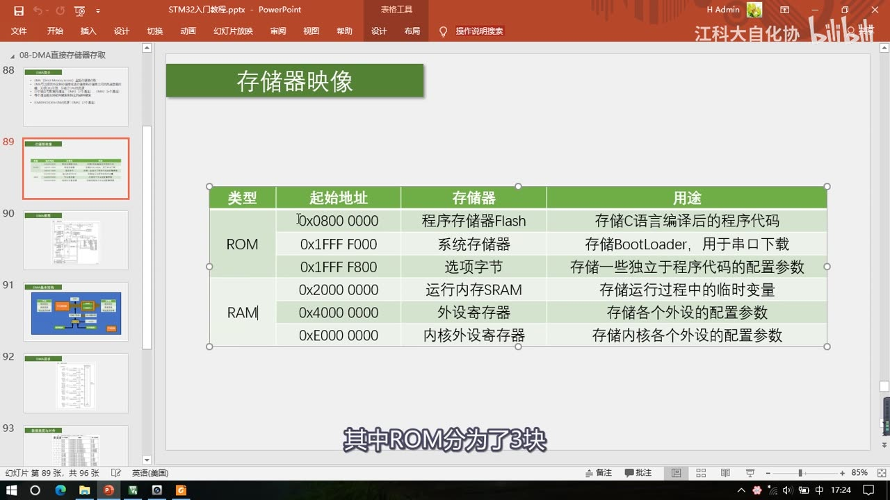
图 5：PPT「存储器映像」表——ROM 三行（0x0800 0000 程序存储器 Flash 存程序代码、0x1FFF F000 系统存储器存 BootLoader 用于串口下载、0x1FFF F800 选项字节存独立配置参数）与 RAM 三行（0x2000 0000 运行内存 SRAM 存临时变量、0x4000 0000 外设寄存器存外设配置参数、0xE000 0000 内核外设寄存器）；字幕「其中ROM分为3块」
- 完整的地址范围要看手册表 2：PPT 里是简写地址（只写到
0x1FFF F000、0x1FFF F800这样的起始值），每一块的完整范围（如系统存储器0x1FFFF000～0x1FFFF7FF、选择字节0x1FFFF800～0x1FFFF80F）见参考手册表 2（图 14）。
3.3 手册的存储器映像图
- 在 STM32 中，所有存储器都被安排到了
0x0000 0000到0xFFFF FFFF这个 4GB 的地址范围内——因为 CPU 是 32 位的，寻址范围就是 32 位，最大支持 4GB 容量；而 STM32 的存储器都是 KB 级别，所以这 4GB 里大量地址都是空的，地址使用率还不到 1%； - 图里灰色填充的就是 Reserved（保留）区域，没有使用到；
0x0000 0000这个地址实际上也没有存储器：因为程序从 0 地址开始运行，所以需要把想要执行的程序映射到 0 地址来——映射到 Flash 区就从 Flash 执行、映射到系统存储器区就运行 BootLoader、映射到 SRAM 就从 SRAM 启动，怎么选由 BOOT0 和 BOOT1 两个引脚决定——这就是 0 地址的「别名区」；- 剩下的：
0800开始是 Flash 区（存程序代码）、1FFF开始是系统存储器和选项字节（在 ROM 区最后面）、2000开始是 SRAM 区、4000开始是外设寄存器区、E000开始是内核外设寄存器；具体到每个外设又有自己的起始地址（比如 TIM2 是0x40000000、TIM3 是0x40000400）。
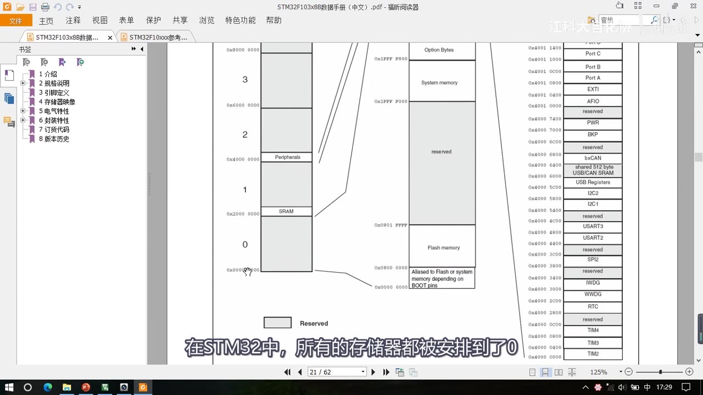
图 6：数据手册的存储器映像图——4GB 地址空间分块（左侧 0～3 区、大量灰色 Reserved）、0x0000 0000 处的「Aliased to Flash or system memory depending on BOOT pins」别名区、0x0800 0000 Flash memory、0x1FFF F000 System memory 与 0x1FFF F800 Option Bytes、右侧外设寄存器区（TIM2/TIM3/TIM4/RTC/WWDG/IWDG/SPI2/USART2/USART3/I2C1/I2C2/USB/CAN/BKP/PWR/AFIO/EXTI/GPIOA～E/ADC1/ADC2 等）；字幕「在STM32中，所有的存储器都被安排到了0」
4. DMA 控制器框图（图21）
4.1 总览：CPU + 存储器 + 总线矩阵
- 这个框图在第一节 STM32 系统结构里见过类似的：左上角是 Cortex-M3 内核（里面包含 CPU 和内核外设等）——除了 CPU，剩下的所有东西都可以看成是存储器（Flash 主闪存、SRAM 运行内存、各个外设的寄存器），所以总共就是「CPU + 存储器」两个东西；
- 寄存器是一种特殊的存储器：一方面 CPU 可以像读写运行内存一样读写寄存器；另一方面寄存器的每一位背后都连接了一根导线，这些导线可以控制外设电路的状态（置引脚高低电平、导通断开开关、切换数据选择器）——所以寄存器是连接软件和硬件的桥梁，软件读写寄存器就相当于在控制硬件。
- 为了高效、有条理地访问存储器，设计了「总线矩阵」：
- 左端是主动单元（拥有存储器的访问权）：内核有 DCode 总线和系统总线（DCode 总线专门访问 Flash，系统总线访问其他东西）；DMA 也必须要有访问主动权，所以主动单元里还有 DMA1 的总线、DMA2 的总线，以及以太网外设自己私有的 DMA 总线（这个不用管）；
- 右端是被动单元：它们的存储器只能被左边的主动单元读写——包括 Flash、SRAM、AHB 桥下面挂的 APB1/APB2 外设（ADC、GPIO、定时器、串口等）。
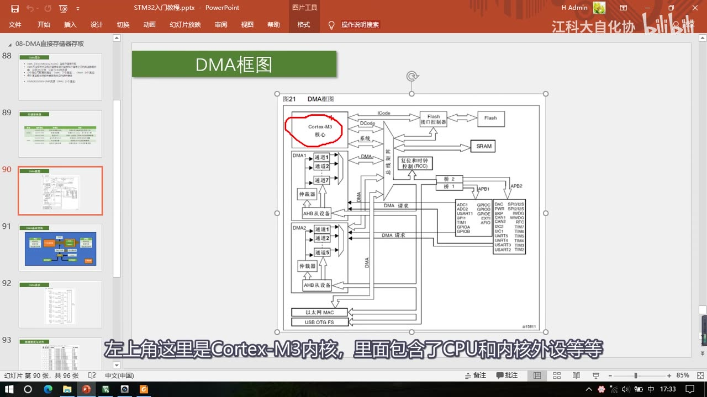
图 7：PPT「DMA框图」（手册图21）——左上红圈「Cortex-M3 内核」（ICode/DCode/系统三条总线），下方「总线矩阵」连接右侧被动单元（Flash 接口控制器→Flash、SRAM、复位和时钟控制 RCC、桥1/桥2→APB1/APB2 外设列）；左侧是 DMA1（通道 1～7 + 仲裁器 + AHB 从设备）与 DMA2（通道 1～5 + 仲裁器 + AHB 从设备），以及两路「DMA 请求」线、以太网 MAC、USB OTG FS；字幕「左上角这里是Cortex-M3内核，里面包含了CPU和内核外设等等」
4.2 仲裁器、AHB 从设备与 DMA 请求
- 内部通道：DMA1 里有 7 个通道、DMA2 里有 5 个通道，所以它们可以各自独立地工作；
- 仲裁器（通道级）：虽然多个通道可以独立转运数据，但最终 DMA 总线只有一条，所有通道只能分时复用这一条总线——如果产生冲突，就由仲裁器根据通道优先级决定谁先用、谁后用；
- 仲裁器（总线矩阵级）：如果 DMA 和 CPU 都要访问同一个目标，DMA 就会暂停 CPU 的访问以防止冲突；不过总线仲裁器仍然会保证 CPU 得到一半的总线带宽，使 CPU 也能正常工作；
- AHB 从设备：就是** DMA 自身的寄存器**——DMA 作为一个外设也有自己的配置寄存器，它们连接在总线右边的 AHB 总线上；所以 DMA 既是总线矩阵的主动单元（可以读写各种存储器），也是 AHB 总线上的被动单元（CPU 通过这条线路对它进行配置）；
- DMA 请求：请求就是触发的意思——这条线路右边是各个外设，所以** DMA 请求就是 DMA 的硬件触发源**：比如 ADC 转换完成、串口接收到数据时，外设就通过这条线路向 DMA 发出硬件触发信号，DMA 随后执行数据转运。
- 图讲完一句话总结：DMA 总线用于访问各个存储器、内部多个通道可独立转运、仲裁器调度防冲突、AHB 从设备用于配置 DMA 参数、DMA 请求用于硬件触发。
4.3 额外提醒：Flash 是只读的
- 图中 Flash 是 ROM 只读存储器的一种：通过总线直接访问时，无论 CPU 还是 DMA，都是只读的——只能读取数据，不能写入；
- 所以如果 DMA 的目的地址填了 Flash 区域，转运时就会出错，注意一下；
- Flash 也不是绝对不能写入——可以配置 Flash 接口控制器对 Flash 进行写入，不过那是另一个课题，这里不讨论；总之直接访问 Flash 只能读；
- SRAM 是运行内存，可以任意读写，没有问题；外设寄存器要看手册描述（有的只读、有的只写），不过我们主要用的数据寄存器都是可以正常读写的。
5. DMA 基本结构图（写代码必看）
上面的框图只是笼统的结构，内部执行细节没有体现；作者总结的这张「DMA 基本结构图」如果要编写代码实际控制 DMA，是必不可少的。
5.1 两个站点的三个参数
- 左边是「外设寄存器」站点、右边是「存储器」站点（包括 Flash 和 SRAM）——这两部分就是数据转运的两大站点；
- 注意手册的用词：手册里说的**「存储器」一般特指 Flash 和 SRAM，不包含外设寄存器**；外设寄存器一般直接称作**「外设」——所以描述方式是「外设到存储器、存储器到存储器」，虽然我们说过寄存器也是存储器的一种，但 STM32 还是用「外设/存储器」来区分**；
- 方向参数决定是向左还是向右：外设 → 存储器、存储器 → 外设；另外还可以存储器 → 存储器（Flash 到 SRAM、SRAM 到 SRAM）；因为 Flash 只读，所以不能 SRAM → Flash、Flash → Flash；
- 两个站点各有 3 个参数：
- 起始地址——决定数据从哪里来、到哪里去；
- 数据宽度——一次转运按多大的数据宽度进行：字节 Byte = 8 位（一次一个
uint8_t）、半字 HalfWord = 16 位（一次一个uint16_t）、字 Word = 32 位（一次一个uint32_t）；比如转运 ADC 的数据，ADC 结果是uint16_t，所以这个参数要选半字； - 地址是否自增——指定一次转运完成后、下一次转运地址要不要移动到下一个位置，相当于指针
p++；比如 ADC 扫描模式用 DMA 转运：外设地址是 ADC_DR 寄存器，寄存器这边显然不用自增；存储器这边地址就需要自增（每转运一个数据就往后挪一个坑），否则下次再转就会把上次的数据覆盖掉；
- 存储器到存储器的转运怎么配：把其中一个存储器的地址放到「外设」站点上就行——「这个站点虽然叫外设寄存器，但只是个名字而已」，写 Flash 地址它就去 Flash 找、写 SRAM 地址它就去 SRAM 找；甚至可以在外设站点写存储器地址、存储器站点写外设地址、把方向反过来，也都行；你也可以把它叫做站点 A、站点 B，不必拘泥于名字。
5.2 传输计数器、自动重装与触发控制
- 传输计数器：用来指定总共需要转运几次——它是一个自减计数器：给它写 5，DMA 就只能进行 5 次转运，每转运一次减 1；减到 0 之后 DMA 就不再转运了，而且之前自增的地址也会恢复到起始位置（方便之后开始新一轮）；
- 自动重装器：决定计数器减到 0 之后是否要自动恢复到最初的值——不重装就是正常的单次模式（转运一轮就结束，比如转运一个数组），重装就是循环模式（比如 ADC 扫描模式 + 连续转换，DMA 也要用循环模式配合 ADC）；
- 触发控制：决定DMA 在什么时机进行转运，触发源有硬件触发和软件触发，具体选哪个由 M2M 参数决定：
- M2M = Memory to Memory（「2」的英文 two 和 to 同音，所以 M2M 就是 M to M）；
- M2M = 1 → 软件触发：执行逻辑是以最快的速度、连续不断地触发 DMA，争取尽早把传输计数器清零、完成这一轮转运——所以软件触发可以理解成「连续触发」；它一般适用于存储器到存储器的转运（软件启动、不需要时机、想尽快完成）；
- M2M = 0 → 硬件触发：触发源可以选择 ADC、串口、定时器等等；硬件触发一般用于与外设有关的转运（需要时机，外设达到时机时给一个信号触发 DMA）；
- ⚠️ 软件触发与循环模式不能同时用：因为软件触发就是想把计数器清零、循环模式是清零后自动重装——如果同时用，那 DMA 就停不下来了；
- 开关控制：就是给 DMA 开关的使能位（视频顺口提到库函数里对应的就是 DMA 使能函数，具体写法在 P24）；
- DMA 进行转运的几个条件：① 开关控制必须使能 ② 传输计数器必须大于 0 ③ 触发源必须有触发信号——触发一次、转运一次、计数器自减一次；当传输计数器等于 0、又没有自动重装时，无论是否触发，DMA 都不会再转运了，这时需要：关闭 DMA → 给传输计数器写入一个大于 0 的数 → 再使能 DMA；
- 注意：写传输计数器时，必须先关闭 DMA 再进行——不能在 DMA 开启时写传输计数器，这是手册里的规定。
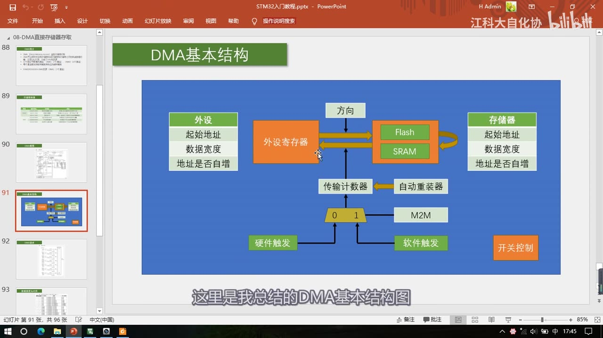
图 8：PPT「DMA基本结构」——左侧「外设」站点（起始地址/数据宽度/地址是否自增）→「外设寄存器」→方向→「Flash/SRAM」→右侧「存储器」站点（起始地址/数据宽度/地址是否自增）；下方「传输计数器」←「自动重装器」，数据选择器「0/1」由「M2M」控制，左边「硬件触发」、右边「软件触发」，右下角「开关控制」；字幕「这里是我总结的DMA基本结构图」
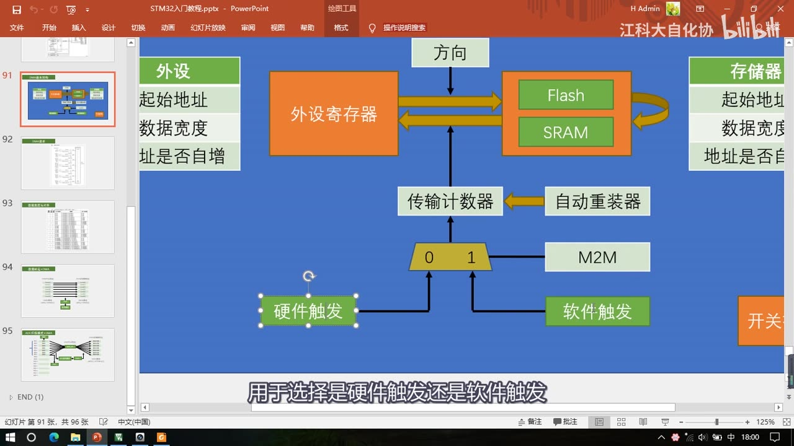
图 9：同一张基本结构图的放大——外设站点（起始地址/数据宽度/地址是否自增）、外设寄存器 → 方向 → Flash/SRAM → 存储器站点，传输计数器与自动重装器，M2M 控制的数据选择器「0/1」接硬件触发/软件触发；字幕「用于选择是硬件触发还是软件触发」
6. DMA1 请求映像（图22）
- 每个通道都有一个数据选择器，可以选择硬件触发或软件触发；
- 作者对这幅手册图的解读（老师觉得手册原图画得不好理解，重新布了局）：M2M 位是数据选择器的控制位（决定选硬件触发还是软件触发），EN 位是开关控制（EN=0 时数据选择器不工作、EN=1 才工作）——「这样就好理解一些了」；
- 左边的硬件触发源：每个通道的硬件触发源都不同：
| 通道 | 硬件触发源（图22 DMA1请求映像） |
|---|---|
| 通道 1 | ADC1、TIM2_CH3、TIM4_CH1 |
| 通道 2 | USART3_TX、TIM1_CH1、TIM2_UP、TIM3_CH3、SPI1_RX |
| 通道 3 | USART3_RX、TIM1_CH2、TIM3_CH4、TIM3_UP、SPI1_TX |
| 通道 4 | USART1_TX、TIM1_CH4、TIM1_TRIG、TIM1_COM、TIM2_CH2、SPI2/I2S2_RX、I2C2_TX |
| 通道 5 | USART1_RX、TIM1_UP、SPI2/I2S2_TX、TIM2_CH1、TIM4_CH3、I2C2_RX |
| 通道 6／7 | 画面下部可读（USART2_RX、TIM1_CH3 等），本课用得少 |
- 硬件触发必须用对应通道：要用 ADC1 触发，就必须选通道 1；要用定时器 2 的更新事件触发，就必须选通道 2；剩下的同理——「每个通道的硬件触发源都不同，所以想用某个硬件触发源，就必须使用它所在的通道」；
- 软件触发则可以任意选通道（每个通道的软件触发都一样）——这就是「每个通道都支持软件触发和特定的硬件触发」里「特定」的意思；
- 同一个通道里有多个触发源时（比如通道 1 的 ADC1/TIM2_CH3/TIM4_CH1）：到底选哪个，取决于你把哪个外设的 DMA 输出开启了——必须在对应外设里开启它的 DMA 输出（用库函数，在 P24 讲），这路才有效；如果三个都开启了，理论上三个硬件都能触发（图里是一个或门），不过一般只开启其中一个；
- 优先级：7 个请求进到仲裁器进行优先级判断，最终产生内部的 DMA1 请求——默认优先级是通道号越小、优先级越高（类似于中断优先级），也可以在程序中配置优先级，「不过这个影响并不是很大，了解一下就行了」；
- DMA2 有自己的一套请求映像（图23）和同样的表，内容一样，本芯片没有 DMA2，一句带过。
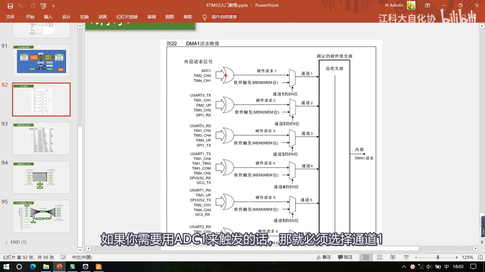
图 10：PPT「图22 DMA1请求映像」——左边「外设请求信号」列（ADC1/TIM2_CH3/TIM4_CH1 → 通道1 的硬件请求；USART3_TX/TIM1_CH1/TIM2_UP/TIM3_CH3/SPI1_RX → 通道2；USART3_RX/TIM1_CH2/TIM3_CH4/TIM3_UP/SPI1_TX → 通道3；USART1_TX/TIM1_CH4/TIM1_TRIG/TIM1_COM/TIM2_CH2/SPI2(I2S2)_RX/I2C2_TX → 通道4；USART1_RX/TIM1_UP/SPI2(I2S2)_TX/TIM2_CH1/TIM4_CH3/I2C2_RX → 通道5……），每通道都有「软件触发（MEM2MEM位）」与「通道x的EN位」，右侧「固定的硬件优先级」「高优先级」→「内部DMA1请求」；字幕「如果你需要用ADC1来触发的话，那就必须选择通道1」
7. 数据宽度与对齐（表57）
- 两个站点都有数据宽度参数：宽度一样就是正常地一个个转运；宽度不一样怎么处理，就看表57「可编程的数据传输宽度和大小端操作」；
- 表的第一列是源端宽度、第二列是目标宽度、第三列是传输数目；要点只有三句：
- 源和目标都是 8 位：在源端 0 位置读
B0、在目标 0 位置写B0（正常搬运），接着B1、B2、B3； - 源端窄、目标宽（如 8 位 → 16 位）：目标前面多出来的空位补 0——读
B0、写00B0；8 位 → 32 位同理前面补 0； - 源端宽、目标窄（如 16 位 → 8 位）：读
B1B0只写入B0——多出来的高位被舍弃； - 总结：小的转到大的里面去，高位补 0；大的转到小的里面去，高位舍弃；数据宽度一样就直接搬。
- 源和目标都是 8 位：在源端 0 位置读
- 表名里带「大小端操作」，但老师只讲了宽度补 0/截断，没有展开大小端。
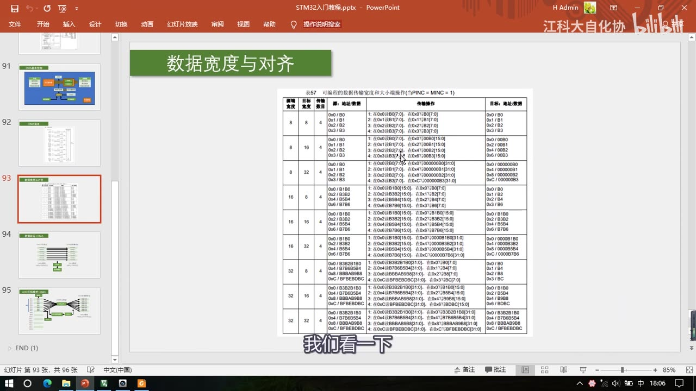
图 11：PPT「数据宽度与对齐」——表57「可编程的数据传输宽度和大小端操作（当PINC = MINC = 1）」：9 行组合（8→8/8→16/8→32/16→8/16→16/16→32/32→8/32→16/32→32），列出源地址、传输操作与目标地址（如 8→16 时「在 0x0 读 B0 的低 8 位，在 0x0 写 00B0（16 位）」）；字幕「我们看一下」
8. 两个典型例子
8.1 例 1：数据转运 + DMA（存储器 → 存储器）
- 任务：将 SRAM 里的数组 DataA，转运到另一个数组 DataB 中（对应程序①）；
- 按基本结构图逐项配（这里是配置思路，不是代码）：
- 外设站点起始地址：给 DataA 数组的首地址；存储器站点起始地址：给 DataB 数组的首地址；
- 数据宽度：两个数组都是
uint8_t，所以都按 8 位字节传输； - 地址是否自增：我们想要
DataA[0]→DataB[0]、DataA[1]→DataB[1]一一对应，所以两个站点的地址都自增； - 三种错误的组合也讲了：左边不自增、右边自增 → 转运完成后 DataB 所有数据都等于
DataA[0]；左边自增、右边不自增 →DataB[0]等于 DataA 最后一个数、DataB 其他的数不变；两边都不自增 → 一直是DataA[0]→DataB[0]，其他数据不变； - 方向：外设站点 → 存储器站点（想反向就换方向参数）；
- 传输计数器：要转运 7 次就给 7，不需要自动重装；触发：软件触发（存储器到存储器不需要等硬件时机，尽快完成）；
- 最后使能 DMA，数据就会从 DataA 转运到 DataB；转运 7 次后计数器减到 0、DMA 停止、转运完成——「这个过程相当于把 DataA 的数据复制到了 DataB 的位置」。
8.2 例 2：ADC 扫描模式 + DMA（外设 → 存储器）
- 任务：ADC 扫描模式依次转换 7 个通道，结果都放到 ADC_DR 里；要在每个单独通道转换完成后用 DMA 转运一次，并且目的地址自增，这样数据才不会互相覆盖（对应程序②）；
- 配置思路：外设地址写 ADC_DR 的地址；存储器地址在 SRAM 里定义一个数组
uint16_t ADValue[7]、把它的地址当作存储器站点地址；数据宽度：ADC_DR 和数组都是uint16_t，所以是 16 位半字传输；地址自增：外设地址不自增、存储器地址自增；方向：外设站点 → 存储器站点；传输计数器：7 个通道就计 7 次； - 是否自动重装看 ADC 的配置：ADC 是单次扫描 → DMA 不重装（转换一轮就停止）；ADC 是连续扫描 → DMA 用自动重装（ADC 启动下一轮转换时 DMA 也启动下一轮转运，两者同步工作）；
- 触发：选 ADC 的硬件触发——因为 ADC_DR 的值是在单个通道转换完成后才有效，所以 DMA 转运的时机必须和「单个通道转换完成」同步。
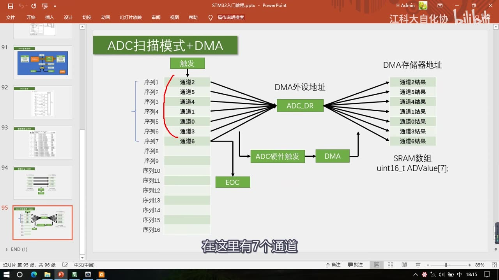
图 12：PPT「ADC扫描模式+DMA」——左边规则组序列 1～7 依次填通道 2/5/4/1/0/3/6，触发后转换结果都进 ADC_DR（DMA 外设地址）；下方「ADC硬件触发」→「DMA」；右侧 DMA 存储器地址把「通道2结果…通道6结果」依次放进「SRAM数组 uint16_t ADValue（7 个元素）」；字幕「在这里有7个通道」
9. ADC 与 DMA 为什么是「天生一对」
- 上一节讲过：ADC 扫描模式下，每个单独的通道转换完成后没有任何标志位、也不会触发中断——所以我们程序不太好判断某一个通道转换完成的时机是什么时候；
- 作者的研究结论（本集重点，注意这是「实测经验」不是手册原文）：虽然单个通道转换完成后不产生任何标志位和中断，但是它应该会产生 DMA 请求、去触发 DMA 转运——这部分内容手册里并没有详细描述；「根据我实际实验，单个通道的 DMA 请求肯定是有的，要不然这个实验就做不成了」；
- 所以 DMA 最常见的用途就是配合 ADC 的扫描模式：ADC 扫描模式有数据覆盖的缺陷（这是 ADC 固有的），这个缺陷使 ADC 和 DMA 成为了最常见的伙伴——ADC 对 DMA 的需求非常强烈；
- 其他外设用 DMA 是锦上添花（不使用也可以，顶多损失一些性能）；但ADC 扫描模式如果不用 DMA，功能会受到很大的限制。
10. 参考手册导读
- 本节涉及手册的第 10 章 DMA 控制器，以及第 2 章存储器和总线架构（系统架构 / 存储器组织 / 位段区）；
- 第 2 章：系统架构图（第一节也见过，下面有各总线介绍）；存储器组织里是存储器映像表（外设寄存器地址都是
40开头）；嵌入式 SRAM 起始地址2000； - 位段区（了解即可）：手册说存储器包含两个位段区域，映射了外设寄存器和 SRAM 中全部的位——相当于位寻址，把每一位都分配了地址；SRAM 位段区是
0x22000000开头的区域、外设寄存器位段区是0x42000000开头的区域； - 闪存组织（表2）：闪存被分为很多页，地址都是
0800开头；主存储块页 0～31（每页 1K，0x0800 0000起）；信息块 = 系统存储器0x1FFFF000～0x1FFFF7FF（2K）+ 选择字节0x1FFFF800～0x1FFFF80F（16 字节）；闪存接口寄存器在0x4002 2000区（FLASH_ACR、FLASH_KEYR、FLASH_CR等）——它地址是40开头，所以显然是一个外设，这个外设可以对闪存进行读写； - DMA 章节：简介和主要特性 → 结构框图 → DMA 处理（每次 DMA 传送由 3 个操作组成；CPU 和 DMA 访问相同目标时 DMA 暂停 CPU，但 CPU 可以得到一半带宽）→ 通道配置过程 → 循环模式和存储器到存储器的模式（CIRC 位 / MEM2MEM 位）→ 表57 数据宽度与对齐 → 中断（传输过半、传输完成、传输错误三种；读写保留地址区会产生 DMA 传输错误）→ DMA1/DMA2 请求映像（图22/图23 + 表）；
- 寄存器：ISR（中断状态，置标志位、可申请中断）、IFCR（中断标志清除）、CCR（通道配置：优先级、数据宽度、地址是否自增、循环、方向、是否允许中断）、CNDTR（传输数量）、CPAR（外设地址）、CMAR（存储器地址），最后是寄存器映像汇总表；
- 本集画面里唯一能看到位表的寄存器是 DMA_CCR（图 15）：位 14 MEM2MEM（1=存储器到存储器模式）、位 13:12 PL[1:0] 通道优先级（00 低/01 中/10 高/11 最高）、位 11:10 MSIZE[1:0] 存储器数据宽度（00 8 位/01 16 位/10 32 位/11 保留）、位 9:8 PSIZE[1:0] 外设数据宽度（同上）、位 7 MINC 存储器地址增量模式（0 不执行/1 增量）。
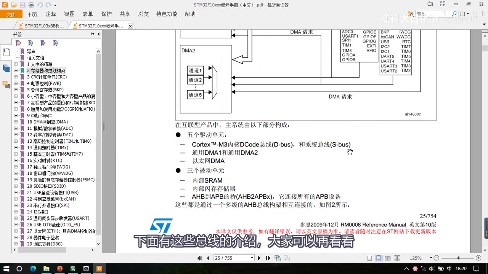
图 13：参考手册第2章「存储器和总线架构」——上方是系统架构图的一部分（DMA2 的通道 1～5、DMA 请求线、右侧各外设 ADC3/USART1/SPI1/TIM1/TIM8/GPIOA…）；下方文字「在互联型产品中，主系统由以下部分构成：五个驱动单元：Cortex-M3 内核 DCode 总线（D-bus）和系统总线（S-bus）、通用 DMA1 和通用 DMA2、以太网 DMA；三个被动单元：内部 SRAM、内部闪存存储器、AHB 到 APB 的桥（AHB2APBx），它连接所有的 APB 设备」；字幕「下面有这些总线的介绍，大家可以再看看」
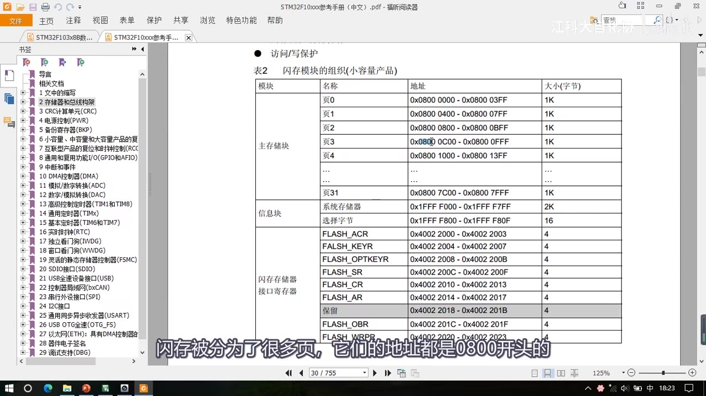
图 14：参考手册表2「闪存模块的组织（小容量产品）」——主存储块页 0（0x0800 0000～0x0800 03FF，1K）…页 31（0x0800 7C00～0x0800 7FFF，1K）；信息块：系统存储器 0x1FFF F000～0x1FFF F7FF（2K）、选择字节 0x1FFF F800～0x1FFF F80F（16 字节）；闪存存储器接口寄存器 FLASH_ACR/KEYR/OPTKEYR/SR/CR/AR/OBR/WRPR（0x4002 2000 区）；字幕「闪存被分为了很多页，它们的地址都是0800开头的」
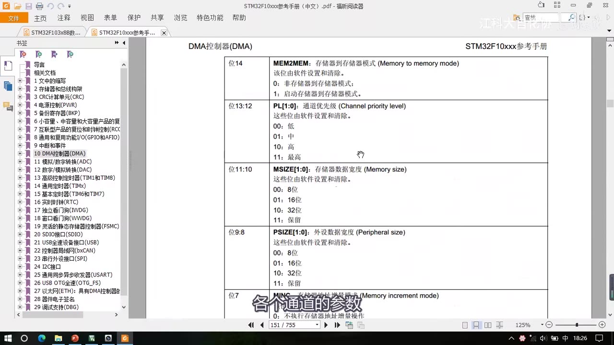
图 15：参考手册 DMA_CCR 寄存器位说明——位14 MEM2MEM（0 非存储器到存储器/1 启动存储器到存储器模式）、位13:12 PL 的 1:0 位（00 低/01 中/10 高/11 最高）、位11:10 MSIZE 的 1:0 位（00 8位/01 16位/10 32位/11 保留）、位9:8 PSIZE 的 1:0 位（同上）、位7 MINC（存储器地址增量模式）；字幕「各个通道的参数」
坑与易错点
- DMA 的「外设/存储器」只是名字：外设站点照样能放 SRAM/Flash 地址（存储器到存储器转运就是靠它），不必拘泥于名字。
- Flash 只能读不能写：DMA 目的地址填 Flash 区会出错；SRAM 才能随便读写。
- 软件触发与循环模式不能同时用：软件触发是一直想清零、循环模式是清零后重装——同时用 DMA 就停不下来。
- 写传输计数器前必须先关闭 DMA：手册规定，开启状态下写计数器是无效/不允许的。
- 计数器减到 0 且不重装后，DMA 不会自动复活：要关闭 → 重写计数器 → 再使能才能继续。
- DMA 工作三条件缺一不可：开关使能 + 计数器>0 + 有触发信号。
- 硬件触发源绑定固定通道：ADC1 只能用通道 1；用错通道不会触发（软件触发则任意通道）。
- 同一通道有多个触发源时，看开启的是哪个外设的 DMA 输出：不开启对应外设的 DMA 输出，这路硬件触发无效。
- 默认优先级是通道号越小越高（可配置）；多个通道同时请求时由仲裁器排队。
- DMA 和 CPU 抢总线时 CPU 可能被暂停：但仲裁器保证 CPU 至少一半总线带宽。
- 数据宽度要按数据类型选：ADC 结果
uint16_t→ 半字（16 位）；uint8_t→ 字节；uint32_t→ 字——选错会漏数据或错位。 - 地址自增要按场景配：ADC_DR 这种寄存器不自增（永远读同一个寄存器）；目标数组必须自增，否则所有数据都写到同一格、互相覆盖。
- 小转大高位补 0、大转小舍弃高位：8 → 16 位是
00B0；16 → 8 位只留低 8 位。 - 循环模式要跟外设模式配套：ADC 单次扫描 → DMA 不重装；ADC 连续扫描 → DMA 循环模式，否则数据对不上。
- 本集没有代码：所有配置（DMA 初始化结构体、通道选择、使能、中断）在 P24，本集只给原理与参数含义。
- ADC 单通道 DMA 请求是作者实测：手册没有写「单通道转换完成会产生 DMA 请求」，这是实验验证的结论。
时间轴
| 时间 | 内容 |
|---|---|
| 0:05 | 开场：继续 STM32 入门教程 |
| 0:09 | 本节学习 DMA，直接存储器存取 |
| 0:13 | DMA 是一个数据转运小助手，协助 CPU 完成数据转运 |
| 0:20 | 先看现象：本节共有两个程序 |
| 0:25 | 第一个是 8-1 DMA数据转运 |
| 0:28 | 第二个是 8-2 DMA+AD多通道 |
| 0:34 | 程序①：用 DMA 做存储器到存储器的数据转运（复制数组） |
| 0:44 | 先看最终的代码 |
| 0:46 | 定义数组 DataA 存 1、2、3、4 作为源数据 |
| 0:52 | 再定义数组 DataB 存 4 个 0 作为目的地 |
| 0:59 | 写一个模块 MyDMA |
| 1:08 | 传入转运数据的长度 4 |
| 1:11 | 主循环：第一步自增变化 DataA 的数据 |
| 1:18 | 第二步显示 DataA 和 DataB，延时 1 秒 |
| 1:25 | 第三步调用 MyDMA_Transfer 用 DMA 转运 |
| 1:33 | 和用 for 循环 CPU 手动转运的效果一样 |
| 1:40 | 最后再显示 DataA/DataB，看是否转运过去 |
| 1:48 | 下载看现象：第一行 DataA 和地址 20000004 |
| 1:59 | 第二行是 DataA 的源数据，每 2 秒变一次 |
| 2:05 | 第三行 DataB 和地址 20000008 |
| 2:10 | 最后一行是 DataB 的数据 |
| 2:13 | DataA 每变一次，Delay 1 秒后数据转运到 DataB |
| 2:20 | 这个转运过程由 DMA 完成 |
| 2:23 | 屏幕小只定义 4 个数据，也可以定义 100、1000 个 |
| 2:35 | 第一个程序现象看完 |
| 2:38 | 接着看第二个程序 DMA+AD多通道 |
| 2:45 | 就是上一节预告过的：ADC 扫描模式实现多通道采集 |
| 2:52 | 用 DMA 转运，AD 数据自动跑到定义的数组里 |
| 3:01 | 之后只需要用 OLED 显示 |
| 3:07 | 下载看现象：也是测量 PA0～PA3 四个通道 |
| 3:24 | 电位器看 AD0，左拧变小、右拧变大 |
| 3:33 | 光敏传感器看 AD1 |
| 3:43 | 热敏传感器看 AD2 |
| 3:55 | 反射红外看 AD3 |
| 4:05 | 现象和上一节 AD 多通道一样 |
| 4:18 | 回 PPT，先看 DMA 的简介 |
| 4:20 | DMA 直译直接存储器存取/访问 |
| 4:35 | DMA 可以直接访问 STM32 内部的存储器（SRAM/Flash/寄存器） |
| 4:50 | DMA 提供外设↔存储器、存储器↔存储器高速传输，无须 CPU 干预 |
| 5:06 | 外设指外设的寄存器，一般是数据寄存器 DR（ADC、串口等） |
| 5:19 | 存储器指 SRAM 和 Flash（存变量数组和程序代码） |
| 5:29 | 转运无须 CPU 参与，节省 CPU 资源 |
| 5:42 | CPU 省下时间干更专业的事，搬运交给 DMA |
| 5:50 | 12 个独立可配置通道：DMA1 7 个、DMA2 5 个 |
| 5:55 | 通道就是转运路径，多通道各转各的互不干扰 |
| 6:22 | 存储器到存储器转运需要软件触发，一口气最快搬完 |
| 6:43 | 外设到存储器不能一股脑，外设数据有时机 |
| 6:54 | 所以用硬件触发：ADC 每个通道转换完成后触发一次 |
| 7:05 | 触发一次、转运一次，这样数据才正确 |
| 7:14 | 外设到存储器一般使用硬件触发 |
| 7:21 | 「特定的硬件触发」：每个通道的硬件触发源不同 |
| 7:31 | 要用某外设的触发源，就得用它连接的通道 |
| 7:38 | C8T6 的 DMA 资源只有 DMA1 的 7 个通道 |
| 7:51 | 简介讲完，接着看存储器映像 |
| 8:00 | 既然 DMA 在存储器之间转运，就要知道有哪些存储器、在哪些地址 |
| 8:15 | 计算机五大组成：运算器、控制器、存储器、输入、输出 |
| 8:22 | 运算器和控制器合成 CPU，所以核心是 CPU 和存储器 |
| 8:31 | 存储器有两个知识点：内容和地址 |
| 8:40 | 表里列出 STM32 所有存储器类型和地址 |
| 8:53 | 数据手册里也有存储器映像图，表就是从图总结的 |
| 9:00 | Flash、SRAM、外设寄存器都是存储器 |
| 9:13 | 本质都是存储器之间的转运，说外设到存储器只是特别指定 |
| 9:26 | 表分两大类：ROM 和 RAM |
| 9:36 | ROM 只读、非易失；RAM 随机、易失 |
| 9:44 | ROM 分 3 块，第一块是程序存储器 Flash（主闪存） |
| 9:49 | 用途是存 C 语言编译后的程序代码，也是下载程序的位置 |
| 9:59 | 分配的起始地址是 0x08000000 |
| 10:10 | 像门牌号一样，终止地址取决于容量 |
| 10:33 | 软件里看到 0800 开头的地址就是主闪存的数据 |
| 10:42 | 系统存储器和选项字节也是 ROM，介质是 Flash |
| 11:00 | 地址都是 1FFF 开头，位置在 ROM 区最后面 |
| 11:21 | BootLoader 存在系统存储器，出厂写入、一般不允许修改 |
| 11:34 | 选项字节存独立于程序代码的配置参数 |
| 11:48 | 选项字节里主要是 Flash 读保护、写保护、看门狗等配置 |
| 11:58 | RAM 区：运行内存 SRAM，地址 0x20000000 |
| 12:07 | 存运行过程中的临时变量、数组、结构体 |
| 12:20 | 定义变量取地址显示，肯定是 2000 开头 |
| 12:25 | 类比电脑：运行内存就是内存条 |
| 12:29 | RAM 区还有外设寄存器，地址 0x40000000 |
| 12:34 | 存各个外设的配置参数（初始化读写的东西） |
| 12:44 | 外设寄存器也是存储器，介质也是 SRAM |
| 12:50 | 内核外设寄存器地址 0xE0000000 |
| 12:56 | 存内核外设（NVIC、SysTick）的配置参数 |
| 13:01 | 内核外设和其他外设不是一个厂家设计，地址分开 |
| 13:18 | 以上是 STM32 的存储器和它们被安排的地址 |
| 13:26 | 看手册的存储器映像图：所有存储器安排在 0 到 8 个 F |
| 13:36 | CPU 是 32 位，寻址范围 4GB |
| 13:43 | STM32 存储器 KB 级别，大量地址空着，使用率不到 1% |
| 13:52 | 灰色填充的是 Reserved 保留区域 |
| 14:04 | 0 地址实际上也没有存储器 |
| 14:10 | 程序从 0 地址开始运行，要把程序映射到 0 地址 |
| 14:18 | 映射 Flash 从 Flash 执行；系统存储器运行 BootLoader；SRAM 从 SRAM 启动 |
| 14:30 | 由 BOOT0 和 BOOT1 两个引脚决定 |
| 14:40 | 这就是 0 地址的别名区 |
| 14:47 | 0800 开始是 Flash 区，存程序代码 |
| 14:55 | 1FFF 开始是系统存储器和选项字节 |
| 15:10 | 2000 开始 SRAM 区、4000 开始外设寄存器区 |
| 15:16 | 具体到每个外设有自己的起始地址（TIM2 40000000、TIM3 40000400） |
| 15:32 | E000 开始是内核外设寄存器 |
| 15:44 | STM32 有哪些存储器、在哪个地址区间就清楚了 |
| 15:50 | 接着看 DMA 的框图 |
| 15:56 | 这个框图在第一节系统结构里见过类似的 |
| 16:05 | 除了 CPU，剩下所有东西都可以看成存储器 |
| 16:18 | Flash 主闪存、SRAM 运行内存，各外设可看成寄存器 |
| 16:25 | 寄存器是特殊的存储器：CPU 可读写，每一位背后连导线控制电路 |
| 17:10 | 所以寄存器是连接软件和硬件的桥梁 |
| 17:20 | 外设=寄存器=存储器，DMA 转运就都是一类问题 |
| 17:30 | 为了高效访问存储器，设计了总线矩阵 |
| 17:35 | 左端主动单元有访问权，右端被动单元只能被读写 |
| 17:43 | 主动单元：内核的 DCode 总线（专访问 Flash）和系统总线 |
| 17:53 | DMA 也要有访问权，所以主动单元还有 DMA 总线 |
| 18:05 | DMA1 一条、DMA2 一条，以太网私有 DMA 不用管 |
| 18:20 | DMA1 有 7 个通道、DMA2 有 5 个，各自独立工作 |
| 18:34 | 仲裁器：通道分时复用一条 DMA 总线，冲突时按优先级决定 |
| 18:50 | 总线矩阵也有仲裁器：DMA 和 CPU 访问同一目标时暂停 CPU |
| 19:05 | 但保证 CPU 至少一半的总线带宽 |
| 19:20 | AHB 从设备就是 DMA 自己的寄存器，CPU 通过它配置 DMA |
| 19:30 | DMA 既是主动单元也是被动单元 |
| 19:48 | DMA 请求就是硬件触发源（ADC 转换完成、串口收到数据） |
| 20:15 | 外设通过这条线向 DMA 发硬件触发信号 |
| 20:25 | 结构讲完：DMA 总线/多通道/仲裁器/AHB 从设备/DMA 请求 |
| 20:43 | 额外问题：Flash 是 ROM，直接访问只能读不能写 |
| 20:55 | DMA 目的地址填 Flash 区，转运时就会出错 |
| 21:05 | 可配置 Flash 接口控制器写入，但那是另一个课题 |
| 21:30 | SRAM 可任意读写；外设寄存器看手册；数据寄存器可正常读写 |
| 21:52 | 接着看作者总结的 DMA 基本结构图 |
| 21:54 | 要写代码控制 DMA，这个图必不可少 |
| 22:10 | 左边外设寄存器站点、右边存储器站点（Flash/SRAM） |
| 22:20 | 手册里「存储器」特指 Flash 和 SRAM，不含外设寄存器 |
| 22:30 | 所以描述为外设到存储器、存储器到存储器 |
| 22:40 | 方向：外设→存储器、存储器→外设、存储器→存储器 |
| 23:00 | Flash 只读，所以不能 SRAM→Flash、Flash→Flash |
| 23:20 | 两个站点各有 3 个参数：起始地址、数据宽度、地址是否自增 |
| 23:30 | 起始地址决定数据从哪来、到哪去 |
| 23:36 | 数据宽度：字节 Byte 8 位、半字 HalfWord 16 位、字 Word 32 位 |
| 23:50 | ADC 结果是 uint16_t，所以选半字 |
| 23:57 | 地址是否自增：相当于指针 p++，一次转运后挪到下一个位置 |
| 24:09 | ADC 扫描用 DMA：外设地址 ADC_DR 不自增、存储器地址自增 |
| 24:25 | 否则下次转运会覆盖上次的数据 |
| 24:40 | 存储器到存储器：把其中一个存储器的地址放在外设站点即可 |
| 24:55 | 站点名字只是名字，写 Flash/SRAM 地址它就去那里找 |
| 25:14 | 甚至外设站点写存储器地址、方向反过来也行 |
| 25:30 | 不必拘泥于名字，当作站点 A、站点 B 也行 |
| 26:20 | 传输计数器：指定总共转运几次，是自减计数器 |
| 26:34 | 写 5 就只能转运 5 次，每转一次减 1 |
| 26:44 | 减到 0 就不再转运，自增的地址也恢复到起始位置 |
| 26:59 | 自动重装器：计数器减到 0 后是否自动恢复初始值 |
| 27:26 | 不重装=单次模式，重装=循环模式 |
| 27:37 | 转运数组一般用单次；ADC 扫描+连续转换则用循环模式 |
| 27:51 | 循环模式和 ADC 连续模式差不多：一轮完成立即开始下一轮 |
| 28:02 | 触发控制：决定 DMA 在什么时机转运 |
| 28:10 | 触发源有硬件触发和软件触发，由 M2M 参数选择 |
| 28:18 | M2M 就是 Memory to Memory（2 和 to 同音） |
| 28:30 | M2M=1 选软件触发：以最快速度连续不断触发，尽早清零计数器 |
| 28:51 | 所以软件触发可以理解成连续触发 |
| 29:00 | 软件触发与循环模式不能同时用，否则 DMA 停不下来 |
| 29:15 | 软件触发一般用于存储器到存储器转运（不需要时机、想尽快完成） |
| 29:34 | M2M=0 是硬件触发，触发源可选 ADC/串口/定时器等 |
| 29:43 | 硬件触发用于与外设有关的转运（需要一定的时机） |
| 30:04 | 最后是开关控制（库函数里的 DMA 使能函数） |
| 30:14 | 转运三个条件：开关使能、传输计数器>0、有触发信号 |
| 30:29 | 触发一次转运一次、计数器自减一次 |
| 30:33 | 计数器等于 0 且不重装时，无论是否触发都不再转运 |
| 30:41 | 此时要关闭 DMA、重写计数器>0、再使能，才能继续 |
| 30:56 | 注意：写传输计数器时必须先关闭 DMA（手册规定） |
| 31:07 | 基本结构讲完，看几个细节问题 |
| 31:14 | 第一个是 DMA 请求：这张图是 DMA1 的请求映像 |
| 31:28 | 下面是 DMA 的 7 个通道，每个通道有数据选择器 |
| 31:38 | 作者觉得手册原图不好理解（EN 位画在侧边、M2M 标注） |
| 32:10 | 所以重新布局：M2M 位是数据选择器的控制位，EN 位是开关 |
| 32:43 | 软件触发后跟 M2M 位的意思：M2M=1 时选软件触发 |
| 32:55 | 左边的硬件触发源：每个通道的硬件触发源都不同 |
| 33:05 | 要用 ADC1 触发就必须选通道 1；用定时器 2 更新事件就必须选通道 2 |
| 33:21 | 所以要用某个硬件触发源，就必须用它所在的通道 |
| 33:29 | 而软件触发的通道可以任意选择（每个通道都一样） |
| 33:36 | 这就是「每个通道支持软件触发和特定的硬件触发」 |
| 33:52 | 通道 1 的硬件触发是 ADC1、TIM2_CH3、TIM4_CH1 |
| 33:59 | 到底选哪个取决于哪个外设开启了 DMA 输出 |
| 34:12 | 必须开启 ADC1 的 DMA 输出，这一路才有效 |
| 34:26 | 三个触发源具体用哪个，取决于开启了哪个外设的 DMA 输出 |
| 34:33 | 如果都开启了，理论上都能触发（或门），一般只开一个 |
| 34:44 | 7 个触发源进仲裁器判断优先级，产生内部 DMA1 请求 |
| 34:51 | 优先级类似中断优先级，默认通道号越小优先级越高 |
| 34:58 | 也可以在程序中配置优先级，影响不太大 |
| 35:05 | 再看数据宽度与对齐：两个站点都有数据宽度参数 |
| 35:16 | 宽度相同就正常转运，不同则看表57 |
| 35:32 | 表：第一列源端宽度、第二列目标宽度、第三列传输数目 |
| 35:38 | 源和目标都是 8 位：在源 0 位置读 B0，在目标 0 位置写 B0 |
| 35:52 | 接着 B1、B2、B3，操作正常 |
| 36:03 | 源 8 位、目标 16 位：读 B0 写 00B0（前面补 0） |
| 36:19 | 8 位到 32 位同理前面补 0 |
| 36:35 | 目标比源窄：读 B1B0 只写入 B0（高位舍弃） |
| 36:49 | 16 位到 8 位：读 B3B2 写 B2，舍弃高位 |
| 37:00 | 总之：小→大补 0，大→小舍弃高位，一样就直接搬 |
| 37:28 | 看两个例子：数据转运+DMA、ADC 扫描模式+DMA |
| 37:46 | 例1：把 SRAM 数组 DataA 转运到 DataB |
| 37:59 | 外设站点起始地址给 DataA 首地址 |
| 38:12 | 存储器地址给 DataB 首地址 |
| 38:16 | 数据宽度：两个数组都是 uint8_t，按 8 位字节传输 |
| 38:24 | 地址是否自增：想要 DataA[0]→DataB[0]、DataA[1]→DataB[1] |
| 38:41 | 所以两个站点的地址都自增 |
| 38:51 | 若左边不自增右边自增：DataB 全等于 DataA[0] |
| 39:02 | 若左边自增右边不自增：DataB[0] 等于 DataA 最后一个数，其他不变 |
| 39:16 | 都不自增：一直 DataA[0]→DataB[0]，其他不变 |
| 39:26 | 方向参数：外设站点→存储器站点（反向就换过来） |
| 39:41 | 传输计数器给 7，不需要自动重装 |
| 39:56 | 触发选软件触发（存储器到存储器不需要等时机） |
| 40:06 | 最后使能 DMA，数据就从 DataA 转运到 DataB |
| 40:13 | 转运 7 次后计数器减到 0、DMA 停止，转运完成 |
| 40:25 | 相当于把 DataA 的数据复制到 DataB 的位置 |
| 40:34 | 例2：ADC 扫描模式+DMA，左边 7 个通道依次转换 |
| 40:47 | 结果都放到 ADC_DR，要在每个单通道转换完成后 DMA 转运并自增 |
| 41:03 | 所以外设地址写 ADC_DR、存储器地址写 SRAM 数组 ADValue |
| 41:19 | 数据宽度都是 uint16_t，所以 16 位半字传输 |
| 41:30 | 地址是否自增：外设地址不自增、存储器地址自增 |
| 41:38 | 方向：外设站点→存储器站点；传输计数器：7 个通道计 7 次 |
| 41:45 | 是否自动重装看 ADC：单次扫描不重装，连续扫描则重装 |
| 42:12 | 触发选 ADC 硬件触发（ADC_DR 在单通道转换完成后才有效） |
| 42:30 | 硬件触发要说明：ADC 扫描单通道完成无标志位/中断 |
| 42:42 | 所以程序不太好判断单通道转换完成的时机 |
| 42:47 | 但根据研究：虽然无标志位/中断，但应该会产生 DMA 请求 |
| 42:59 | 这部分内容手册里并没有详细描述 |
| 43:02 | 根据实验，单个通道的 DMA 请求肯定有，否则实验做不成 |
| 43:10 | ADC 扫描模式和 DMA 配合的流程就讲完了 |
| 43:14 | DMA 最常见用途就是配合 ADC 的扫描模式 |
| 43:20 | ADC 扫描有数据覆盖缺陷，这是 ADC 固有的缺陷 |
| 43:28 | 这个缺陷使 ADC 和 DMA 成为最常见伙伴 |
| 43:35 | 其他外设用 DMA 是锦上添花，不用也行 |
| 43:45 | 但 ADC 扫描不用 DMA，功能会受到很大限制 |
| 43:59 | PPT 讲完，看参考手册 |
| 44:04 | 本节内容：第 10 章 DMA 控制器、第 2 章存储器和总线架构 |
| 44:18 | 第 2 章：系统架构（第一节也见过），下面是总线介绍 |
| 44:30 | 存储器组织：存储器映像表、外设寄存器地址都是 40 开头 |
| 44:45 | 之后是嵌入式 SRAM，起始地址 2000 |
| 45:00 | 位段区域：映射外设寄存器和 SRAM 中全部的位 |
| 45:15 | 位段区相当于位寻址，把每一位都分配了地址 |
| 45:30 | SRAM 位段区 2200 开头、外设位段区 4200 开头（了解即可） |
| 45:50 | 闪存被分为很多页，地址都是 0800 开头 |
| 46:00 | 表2 闪存组织：页 0～31、信息块、闪存接口寄存器 |
| 46:10 | 闪存区最后是系统存储器和选项字节，统称信息块 |
| 46:20 | 闪存接口寄存器地址 40 开头，是一个外设，可对闪存读写 |
| 46:40 | 其他一些描述大家可以再看看 |
| 46:50 | DMA 章节：简介和主要特性 |
| 47:00 | 然后是结构框图，可以好好看看 |
| 47:10 | 每次 DMA 传送由 3 个操作组成 |
| 47:20 | CPU 和 DMA 访问相同目标时 DMA 暂停 CPU，但 CPU 得一半带宽 |
| 47:35 | DMA 处理、通道配置过程、循环模式与存储器到存储器模式、表57 |
| 48:00 | 传输错误中断：读写保留地址区会产生 DMA 传输错误 |
| 48:10 | 中断：传输过半、传输完成、传输错误 |
| 48:20 | DMA 请求映像（图23 DMA2 请求映像 + 表） |
| 48:30 | 最后是寄存器：ISR/IFCR/CCR/CNDTR/CPAR/CMAR |
| 48:48 | DMA_CCR 位表：MEM2MEM、PL、MSIZE、PSIZE、MINC |
| 49:10 | 寄存器映像汇总表 |
| 49:38 | 结尾：本小节内容到这里就结束了，下一小节开始写代码 |
存疑
- 本集文本来自画面硬字幕的 OCR（PP-OCRv4，source=subtitle-ocr，852 段），不是 ASR。参考手册页脚水印（「本译文仅供参考，如有翻译错误，请以英文原稿为准。请读者随时注意在 ST 网站下载更新版本」）、器件电子签名、页码（
14/754、RM0008）大量混入，这些不是老师口述内容；另有行首噪声（U、IS等）。典型 OCR 错字（本集实际出现）：这个→ 「这介」、任意→ 「低意」、寄存器→ 「奇存器」，已按画面和上下文校正（「刚赤统」一处口述模糊，原意应为「刚才」）。 - 本集没有任何代码：
DMA_Init、DMA_StructInit、DMA_Cmd、DMA_ITConfig等库函数都没有出现（只在基本结构里口述提了一句「开关控制就是库函数里的 DMA 使能函数」）；初始化结构体的成员（外设/存储器地址、方向、传输数量、地址自增、数据宽度、模式、优先级、M2M）本集未讲——本笔记因此不写配置步骤，一律注明「在 P24」。 - 寄存器只有手册导读：
CCR / CNDTR / CPAR / CMAR / ISR / IFCR只在最后翻页 + 口述一句，没有逐位讲解；本集画面里唯一能看到位表的寄存器是 DMA_CCR（图 15），所以本笔记只写 CCR 的位定义，其余寄存器只列名称与作用。 - 「ADC 单通道转换完成会产生 DMA 请求」是作者实测结论（口述 43:02：「根据我实际实验，单个通道的 DMA 请求肯定是有的」），手册里并没有详细描述这一点——本笔记按「实测/经验」标注，不是手册原文。
- 存储器映像的地址是 PPT 简写：PPT 只写到
0x0800 0000/0x1FFF F000/0x1FFF F800这样的起始值，每一块的完整范围见参考手册表2（图 14）（系统存储器0x1FFFF000～0x1FFFF7FF、选择字节0x1FFFF800～0x1FFFF80F）；本笔记正文已注明。 - DMA2、以太网私有 DMA、位段区：老师明确说「不用管」「了解即可」（C8T6 实际只有 DMA1），本笔记各用一两句话带过。
- 软件触发与循环模式不能同时用：本集重点提醒（否则 DMA 停不下来），但代码层面如何避免留到 P24。
- 数据宽度与对齐表：表名含「大小端操作」，但老师只讲了宽度补 0 / 截断，没有展开大小端；本笔记只写讲到的部分。
- 片尾没有工程名：只说「下一小节开始写代码」；结合片头现象可推断 P24 写
8-1 DMA数据转运与8-2 DMA+AD多通道两个工程，但本集画面没有直接说明。 - 本集没有示波器/波形实测：片头现象全是 OLED 数值 + 口述。